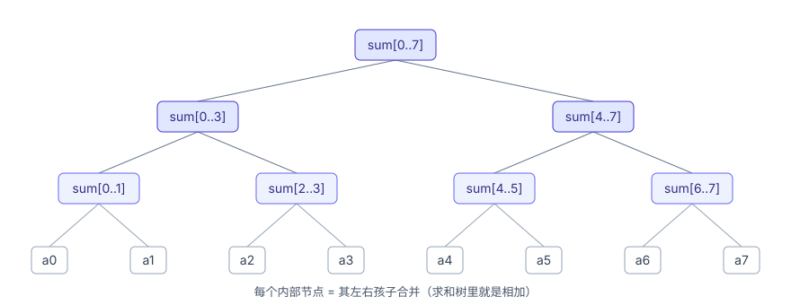
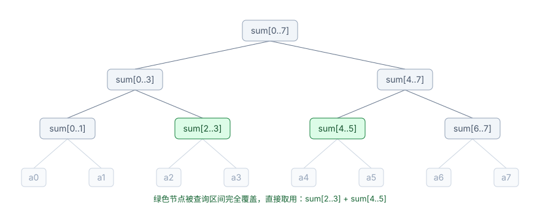
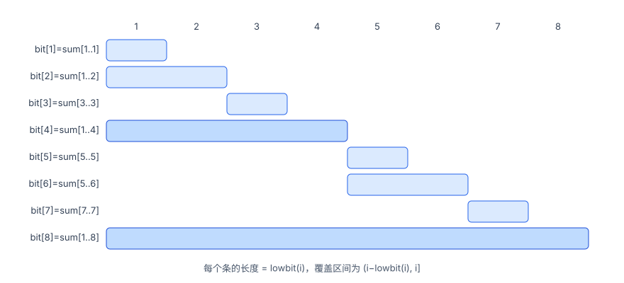

线段树与树状数组：更新与查询的平衡
前缀和让区间求和变成 O(1)，代价是每次修改都要重算整张表。如果数据会变、区间又要反复查，就需要一种同时兼顾两者的结构。线段树和树状数组给出了两种不同重量的答案。
前缀和的软肋
设想一个实时大屏：每小时记录一次销售额，既要随时回答“第 l 到第 r 小时一共卖了多少”，又允许运营手动修正某一小时的数值。用数组直接存，求和要扫 O(r−l+1) 个格子；预计算前缀和后，区间和变成 prefix[r] − prefix[l−1]，一次查询 O(1)。
问题出在更新。前缀和是一张“累积快照”：把 arr[i] 增大 δ，所有下标 ≥ i 的前缀值都会跟着变，最坏要改 O(n) 个格子。如果一秒改十次、查一百次，这张表就变成了瓶颈。反过来，只存原始数组则更新 O(1)、查询 O(n)，同样偏科。
我们需要的是一种“两不误”的结构：单点更新 O(log n)，区间查询 O(log n)。本章介绍两种经典实现——线段树（Segment Tree）和树状数组（Fenwick Tree / Binary Indexed Tree）。
| 方案 | 区间查询 | 单点更新 | 额外空间 | 代码量 |
|---|---|---|---|---|
| 原始数组 | O(n) | O(1) | O(1) | 极短 |
| 前缀和 | O(1) | O(n) | O(n) | 极短 |
| 线段树 | O(log n) | O(log n) | O(n)（数组实现约 4n） | 较长 |
| 树状数组 | O(log n) | O(log n) | O(n) | 较短 |
表里的复杂度都是操作数量级的渐进结论，而不是某次实测的耗时；常数因子不同，不代表同阶的实现速度相同。下面先看线段树。
线段树：用二叉树管理区间
线段树的核心想法只有一句：让树里每个节点代表原数组的一个区间，节点的值就是这个区间的汇总信息。根节点代表整个区间，左右孩子各代表一半，一直细分到单个元素。求区间和时，如果某个节点表示的区间被查询区间完全包含，就能直接取它的值，不必再往下走。

用数组存储时，习惯把根放在下标 0，节点 p 的左右孩子是 2p+1 和 2p+2。建树递归地把区间信息逐层向上合并：
class SegmentTree:
def __init__(self, arr):
self.n = len(arr)
self.tree = [0] * (4 * self.n) # 预留 4n 空间
self._build(0, 0, self.n - 1, arr)
def _build(self, node, lo, hi, arr):
if lo == hi: # 叶子：直接存原值
self.tree[node] = arr[lo]
return
mid = (lo + hi) // 2
self._build(2 * node + 1, lo, mid, arr)
self._build(2 * node + 2, mid + 1, hi, arr)
self.tree[node] = self.tree[2 * node + 1] + self.tree[2 * node + 2]把最后一行的 + 换成 max 或 min，就得到了区间最值的线段树。这是线段树比树状数组更通用的地方：只要区间信息可以合并，它就能用。下面看区间查询为何是 O(log n)。
为什么是 O(log n)
区间查询不是“逐个累加叶子”，而是把查询区间拆成少数几个恰好被覆盖的节点。以查询 [2,5] 为例，它刚好等于两个节点 sum[2..3] 和 sum[4..5] 之和，一次加法就得到答案。

def query(self, l, r):
return self._query(0, 0, self.n - 1, l, r)
def _query(self, node, lo, hi, l, r):
if r < lo or hi < l: # 无交集，返回单位元 0
return 0
if l <= lo and hi <= r: # 完全覆盖，直接取节点值
return self.tree[node]
mid = (lo + hi) // 2
return (self._query(2 * node + 1, lo, mid, l, r)
+ self._query(2 * node + 2, mid + 1, hi, l, r))单点更新则是另一条路径：从根走到对应叶子，把沿途每个节点重算一遍。这条路径长度就是树高。
def update(self, idx, val):
self._update(0, 0, self.n - 1, idx, val)
def _update(self, node, lo, hi, idx, val):
if lo == hi: # 到达叶子，直接写入
self.tree[node] = val
return
mid = (lo + hi) // 2
if idx <= mid:
self._update(2 * node + 1, lo, mid, idx, val)
else:
self._update(2 * node + 2, mid + 1, hi, idx, val)
self.tree[node] = self.tree[2 * node + 1] + self.tree[2 * node + 2]两段代码的共同点是：访问的节点数都正比于树高。树高是 ⌈log₂n⌉，所以查询和更新都是 O(log n)。建树每个节点只算一次，总共 O(n)。
两段代码的共同点是：访问的节点数都正比于树高。树高是 ⌈log₂n⌉，所以查询和更新都是 O(log n)。建树每个节点只算一次，总共 O(n)。
看一次查询到底拆成了几个节点
数组固定为 [1,3,5,7,9,11,13,15]（下标 0..7）。拖动左右端点，观察区间被拆成哪些“完全覆盖”的节点。
懒标记：区间更新
单点更新只影响一条路径。但如果要把区间 [l, r] 里每个数都加上 x，逐个叶子改就要 O(n log n)。懒标记（Lazy Propagation）把这件事变成 O(log n)：如果某个节点表示的区间被修改区间完全覆盖，就只在这个节点上记下“整个区间都要加 x”，并把它的汇总值一次性调好，先不往下推。
这份“待处理的修改”就是懒标记。只有当后续操作需要真正进入这个节点的孩子时，才把标记下推一层，并在推完清空父节点标记。可以这样记：能整块处理就整块处理，以后再细算。
懒标记是线段树实现难度的分水岭，也是最容易写错的地方（常见错误是忘记下推或重复下推）。本章的代码和测试只覆盖不带懒标记的“单点更新 + 区间查询”，它已经能解决相当一部分问题；需要区间更新时再单独学习懒标记版本。
关键区分：“线段树支持区间更新”是加上懒标记之后的能力，不是线段树的默认能力。不带懒标记的线段树只支持单点更新。
树状数组与 lowbit
如果只需要“单点更新 + 区间求和”这一子集，还有一种更轻的做法：树状数组（Fenwick Tree / Binary Indexed Tree，1994 年由 Peter Fenwick 提出）。它只需要一个长度为 n+1 的数组。
它的全部奥秘在一个位运算上：lowbit(x) = x & (-x)，结果是 x 的二进制里最靠后的那个 1 所代表的值。例如 6 = 110₂，lowbit(6) = 2；8 = 1000₂，lowbit(8) = 8。

求前缀和时，从 i 开始不断减去 lowbit 往下跳；更新时，从 i 开始不断加上 lowbit 往上跳。两条路径都是 O(log n) 步。
class FenwickTree:
def __init__(self, n):
self.n = n
self.bit = [0] * (n + 1) # 1-indexed
def update(self, i, delta): # arr[i] += delta
while i <= self.n:
self.bit[i] += delta
i += i & (-i) # 向上跳，lowbit 变大
def prefix(self, i): # sum(arr[1..i])
s = 0
while i > 0:
s += self.bit[i]
i -= i & (-i) # 向下跳，lowbit 变小
return s
def range_sum(self, l, r): # sum(arr[l..r])
return self.prefix(r) - self.prefix(l - 1)验证一下：数组 [1,3,5,7,9,11] 建树后，range_sum(2,5) = 3+5+7+9 = 24；执行 update(3, 10) 后 arr[3] 从 5 变成 15，再查一次得到 34。这两组结果与 examples/range_queries.py 一致。
三者对比与选择
把三种方案放在同一张表里，差异就清楚了。注意这里的复杂度都是渐进操作数量，不代表具体的运行耗时：树状数组常数更小，但线段树能支持更多类型的区间信息。
| 需求 | 原始数组 | 前缀和 | 线段树 | 树状数组 |
|---|---|---|---|---|
| 区间查询 | O(n) | O(1) | O(log n) | O(log n) |
| 单点更新 | O(1) | O(n) | O(log n) | O(log n) |
| 区间更新 | O(r−l+1) | O(n) | O(log n)（带懒标记） | 需配合差分，较绕 |
| 区间最值 | O(n) | 不支持（不可减） | 支持 | 不自然 |
| 额外空间 | O(1) | O(n) | O(n)（数组实现约 4n） | O(n) |
选择规则可以概括成三句：数据不变就查，用前缀和；只要单点更新 + 求和，优先树状数组；要区间更新或区间最值，用线段树（必要时加懒标记）。
值得强调的是“前缀和不支持区间最值”这条：前缀最大值的差 max(a..r) − max(a..l−1) 并不等于 max(l..r)。可减性（比如求和）才是前缀和的适用前提。
边界与常见陷阱
- 树状数组的下标从 1 开始：因为
lowbit(0) = 0，如果从 0 开始，i += lowbit(i)会原地不动、陷入死循环。写代码时必须把原数组下标平移一位。 - 区间求和依赖可减性：树状数组用两个前缀相减得到区间和，因此只能处理像求和、异或这样“可逆”的运算；区间最值不能这样相减。
- 线段树的数组要开够：常开 4n。若用“恰好 2n”的紧凑编号可以省空间，但需要改递归中的下标计算，容易写错。
- 懒标记不是默认能力：不带懒标记的线段树只支持单点更新。加懒标记后，忘记下推或重复下推是最典型的错误。
- “近似常数”不能实测：lowbit 跳跃次数是 O(log n) 的渐进结论，单次快慢仍取决于具体数据和实现，不能用秒表验证复杂度。
回看整条思路：问题来自“更新”与“查询”的权衡，解法是把区间组织成可合并的树。线段树把区间折半成二叉树、用 O(n) 空间换 O(log n) 的两项操作；树状数组则用 lowbit 的位技巧，把同样的两项操作写得更短。两者都是空间换时间，而不是“凭空变快”。
带走三个判断准则
- 前缀和是“静态快照”，只能用于数据不改的场景；一旦要动态更新，就要换结构。
- 只要“单点更新 + 区间求和”，用树状数组（注意 1-indexed）；需要区间最值或区间更新，用线段树。
- 线段树的“区间更新”靠懒标记实现，是额外学的一块，不是默认就有的能力。
继续学习与校验资料
- Fenwick tree — lowbit 定义与更新/查询的跳转
- cp-algorithms: Segment Tree — 建树、查询与懒标记
- 第 19 章：并查集 — 另一类“简单思路 + 关键优化”的结构
- 运行参考：
examples/range_queries.py；测试：tests/test_range_queries.py